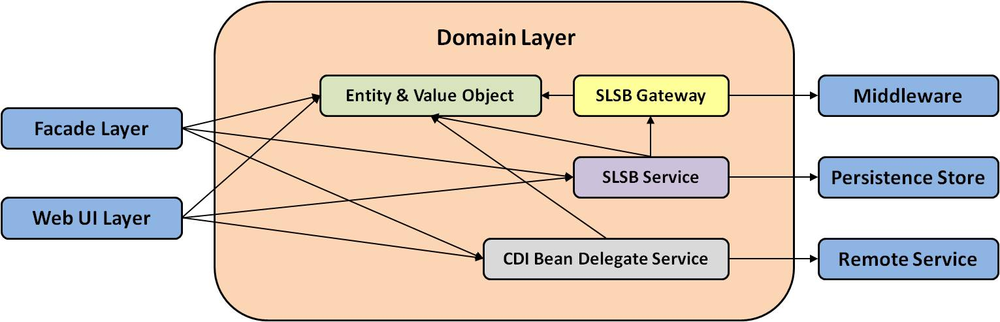

The domain model is the heart of the MedRec application. The application uses object-oriented domain models and follows the domain-driven design, even though MedRec has very simple business logic.
As described in Design Overview, the domain models consist of a number of types of objects, and each of them has clearly-defined responsibilities. EJB technologies, especially Stateless Session Bean and JPA, are used extensively. The diagram below illustrates the construction of the domain layer as well as some typical invocation flows. You can also think of these lines as dependency relationships.

The entities and value objects sit in the center of the domain layer, serving
as the heart of the whole application. Services, gateways and delegate
services are the adapters to various external resources that the application depends on.
Services coordinate all of these to expose business functionality to either web user
interfaces or facades.
Copyright © 1996, 2019, Oracle and/or its affiliates. All rights reserved.